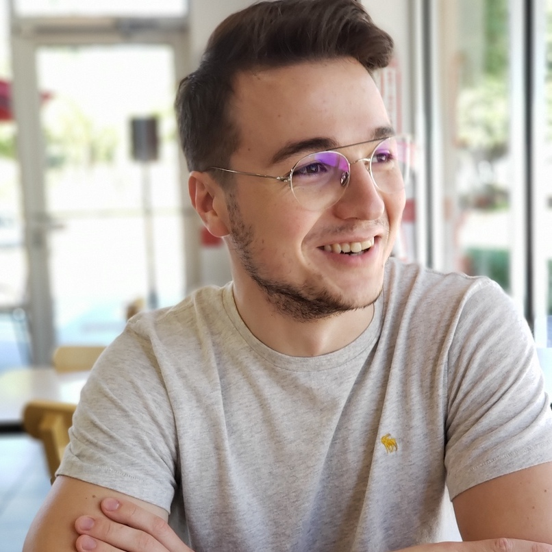

About Me

I am a research assistant at the University of Houston at the Pattern Analysis Lab under Dr. Ricardo Vilalta’s supervision. My research is primarily focused in Machine Learning and it’s subfields. Topics I work on include but are not limited to, Meta-Learning, Domain Adapatation, Topological Data Analysis and Transfer Learning.
Check out my Medium blog for research and life related blog posts!
For any questions or collaboration on ongoing or past projects, please see my Github page and use the Create New Issue option for requests. E-mailing me also works.
Timeline
- [2019-Present]: University of Houston: PhD in Computer Science focus on Machine Learning. Advisor: Ricardo Vilalta
- [Spring 2019]: PDR Corp Internship: Data Analysis, Data Modeling, Supervised Learning
- [2015-2019]: North American University: Bachelor’s in Computer Science
Publications
- Vilalta, R., Dhar Gupta, K., Boumber, Dainis., Meskhi M.: A General Approach to Domain Adaptation with Applications in Astronomy, Publications of the Astronomical Society of the Pacific.
- Vilalta, R., Boumber, Dainis., Meskhi M.: Broadscale Domain Adaptation Using Adaptive Sampling and Active Learning, Manuscript preparing for submission.
Projects
- transferAL: Proposed a new bayesian algorithm with promising results on supervised and unsupervisedastronomy problems
Talks & Teachings
Misc
References
Last Updated On 11/27/2018